EIS¶
Introduction¶
Frequency dispersion measurements (or impedance spectroscopy) have become a common technique for the study of mass and charge transport in electrochemical systems. With the availability of automated high quality frequency response analysis systems immittance (i.e. impedance or admittance) measurements can be obtained in fairly easy way [1].
The advantage of measurements taken in the frequency domain over measurements in the time domain (i.e. pulse or step response measurements) is that the frequency response earl be described analytically, using an equivalent circuit as model. Time domain analysis often requires the approximation of complex functions, e.g. infinite summations of exponential functions. The circuit elements represent the various (macroscopic) processes involved in the transport of charge and mass. The dispersion relations for most equivalent circuit elements are very simple Barsoukov and Macdonald [1], Orazem and Tribollet [2].
If the (complex) immittance diagrams show distinct features, which can easily be related to specific subcircuits of the equivalent circuit model, analysis become quite simple. Often this can be accomplished by graphical means, using a compass and a ruler. However, if the time constants of the respective subcircuits are close together, or if elements with a fractional (e.g. Warburg, or a CPE-type element, a more sophisticated analysis procedure is needed. As the variation of one circuit parameter can influence large parts of the frequency dispersion, all parameters must be adjusted simultaneously in order to obtain the optimum fit to the data [3, 4, 5]
Black Box Approach¶
Assume a black box with two terminals.
One applies a voltage and measures the current response (or visa versa) as show in Fig. 1
Signal can be dc or periodic with frequency math:f, or angular frequency 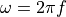 as shown in Fig. 2
- with: 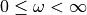:
Voltage: 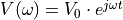
Current: 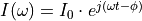
{kind=link}
Fig. 1 EIS AC Waves¶
{kind=link}
Fig. 2 Trigonometric Circle¶
What is EIS?¶
The impedance is determined from the imposed voltage/current and the measured current/voltage through the Ohm’s law:
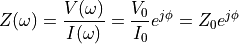
Therefore: * Resistive behavior: 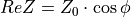 * Capacitive/Inductive behavior 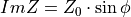
Sometimes, the complex admittance can also be used which is defined as the inverse of the complex impedance
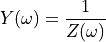
Representation¶
The impedance 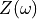 can be represented in two different ways as shown in:
Bode plot: shows the phase shift and magnitude changes in the applied frequency ranges as shown in Fig. 4 and Fig. 5
Nyquist plot: represents the real and imaginary parts of using cartesian coordinates as shown in Fig. 3
The Bode plot has great advantages for observing phase margins in which the system becomes unstable (violent phase or magnitude changes). Therefore, it is useful for the study of sensors, filters, and transistors in electronic devices.
The Nyquist plot provides insight into the possible mechanism or governing phenomena in an equivalent circuit model system. Among these two types of representations, the Nyquist plot is more often used to analyze the characteristics of electrochemical processes.
{kind=link}
Fig. 3 Nyquist Representation¶
{kind=link}
Fig. 4 Bode Modulus Representation¶

Fig. 5 Bode Phase Representation¶
Series and Parallel Connections¶
Series connection: 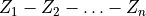 = Z_{eq} = sum Z_i
Parallel connection: 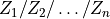 = Z_{eq} = left( sum frac{1}{Z_i} right)^{-1}
Equivalent Circuit Models¶
The circuit model for EIS consists of a combination of electrical circuit elements:
ideal elements: resistors (R), capacitors (C) and inductors (L)
nonideal capacitor-like element: Constant Phase Element (CPE or
 )
)diffusion elements: semi-infinite Warburg (W), Finite Length Warburg (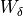 or
 )
and Finite Space Warburg (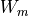 or
)
and Finite Space Warburg (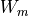 or  )
)
The circuit model represents the entire system of the electrochemical cell and therefore the aim is to construct an optimal circuit model that is physically meaningful and minimizes the number of variables.
Circuit elements¶
The differents circuit elements available with their string representation are listed here and their Nyquist representation is shown in Fig. 6. In order to be recognized by the string parser each element must start the one or two letters defined below and can be followed by a name. The measurement model element needs an additional parameter which the number of Voigt elements defined after an underscore.
R[name]: 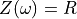
C[name]: 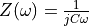
L[name]: 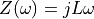
W[name]: 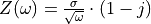
Wd[name]: 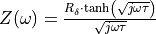
Wm[name]: 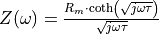
Q[name]: 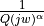
M[name]_[n]: 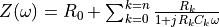
G[name]: 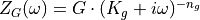
Inductor and Finite Space Warburg are rarely encountered in corrosion studies.
{kind=link}
Fig. 6 Circuit Elements¶
Link between circuit elements and physical parameters¶
Resistors can be linked to resistivity or kinetics:
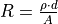
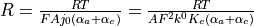
Capacitors can be linked to layer thickness
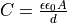
FS/FL Warburg element can be linked to diffusion coefficient and layer thickness:
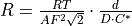
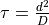
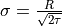
where,
 : resistance []
: resistance []: resistivity [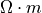]
 : thickness [
: thickness [ ]
] : Area [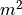]
: Area [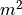]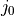: exchange current density [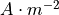]
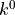: kinetics constant [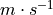]
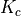: concentration factor [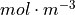]
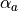: anodic transfer coefficient
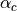: cathodic transfer coefficient
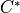: bulk concentration of the diffusing species [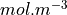]
Simplified Randles Circuit¶
Reflects electrochemical reaction controlled only by kinetics as shown in Fig. 7
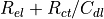
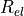: electrolyte resistance
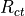: charge transfer resistance
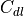: double layer capacitance
{kind=link}
Fig. 7 Simplified Randles¶
Randles Circuit¶
Reflects electrochemical reaction controlled by kinetics and diffusion as shown in Fig. 8
: electrolyte resistance
: charge transfer resistance
: double layer capacitance
: semi-infinite diffusion
{kind=link}
Fig. 8 Randles¶
Differential Impedance analysis¶
The differential Impedance Analysis (DIA) is based on the use of a Local Operator Model (LOM) which is a equivalent circuit for a simple Faradic reaction but has direct meaning with the experimental spectrum that is being analyzed.
The LOM operator corresponds to the equivalent circuit Rads-(R/C).
The procedure of the structural and parametric identification can be described by the following steps:
scanning with the LOM throughout the whole frequency range with a scanning window of a single frequency
parametric identification of the LOM parameters at every working frequency
Frequency analysis of the LOM parameters’ estimates
Scanning with the LOM operator¶
The impedance of the LOM operator is defined as shown in Eq.18:
(18)¶
Parametric idenfication of the LOM parameters¶
The objective is to identify the LOM parameters .
First the effective resistance and the effective inductance are expressed:
Derivatives of the effective resistance and inductance are:
Expression of the LOM parameters :
Temporal analysis¶
The temporal analysis computes the logarithmic values of the LOM parameters with respect to
 as defined in Eq.19:
as defined in Eq.19:
(19)¶
Differential temporal analysis¶
The differential temporal analysis computes the derivatives of with respect to
as defined in Eq.20
(20)¶
Spectral analysis¶
The spectral analysis is obtained by accumulating frequency bands with approximatively equal values of the parameters . The amplitude of the individual spectral line can be expressed as shown in Eq.21.
(21)¶
The spectral line is expressed in dB.
Differential spectral analysis¶
The differential spectral analysis is obtained by accumulating frequency bands with approximatively equal values of the parameters . The amplitude of the individual spectral line can be expressed as shown in Eq.22.
(22)¶
The spectral line is expressed in dB.
An example with a simple RC circuit:
{kind=link}
Fig. 9 Simple RC¶
{kind=link}
Fig. 10 Temporal Analysis¶
{kind=link}
Fig. 11 Differential Temporal Analysis¶

Fig. 12 Spectral Analysis¶
{kind=link}
Fig. 13 Differential Spectral Analysis¶